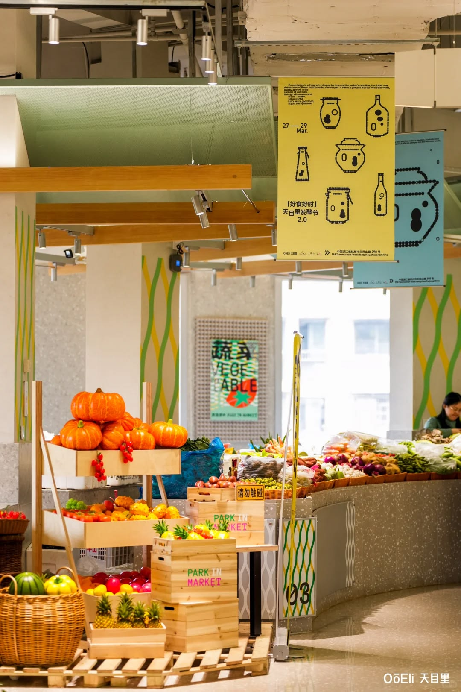
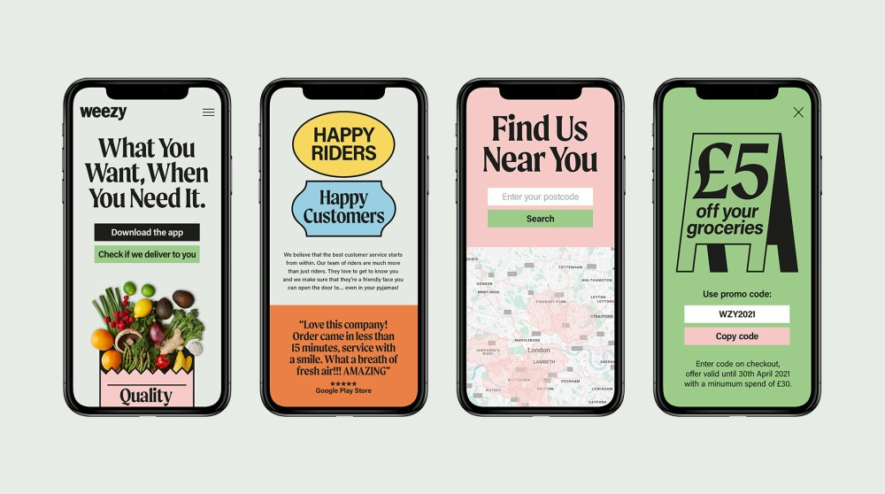
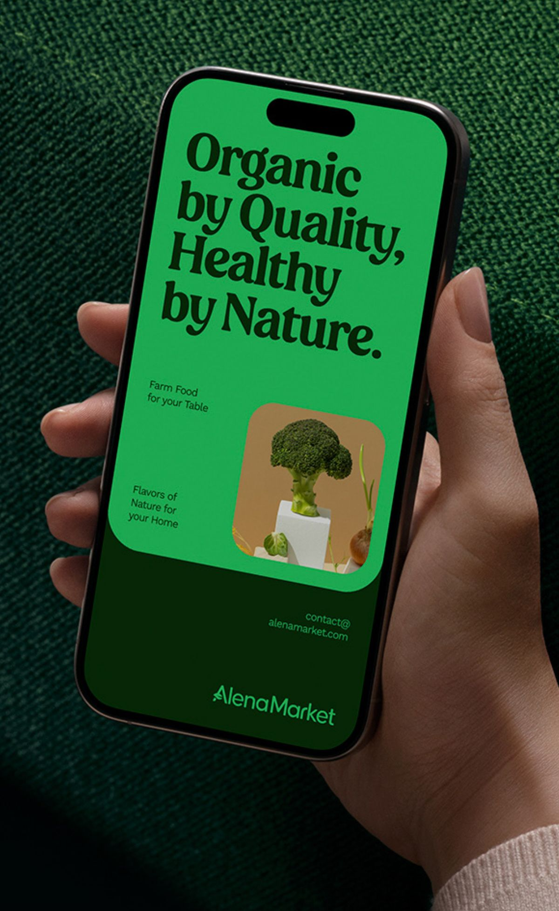
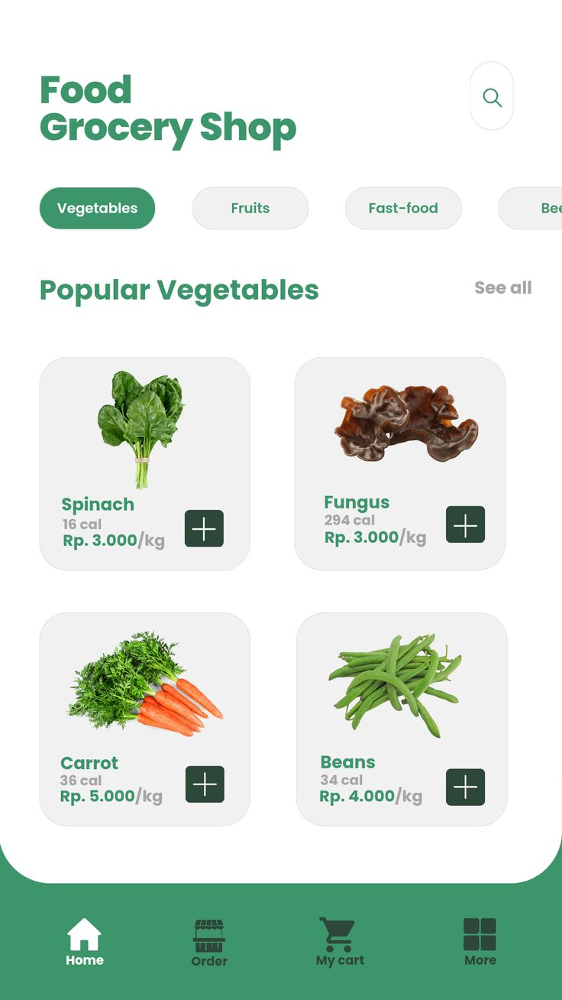
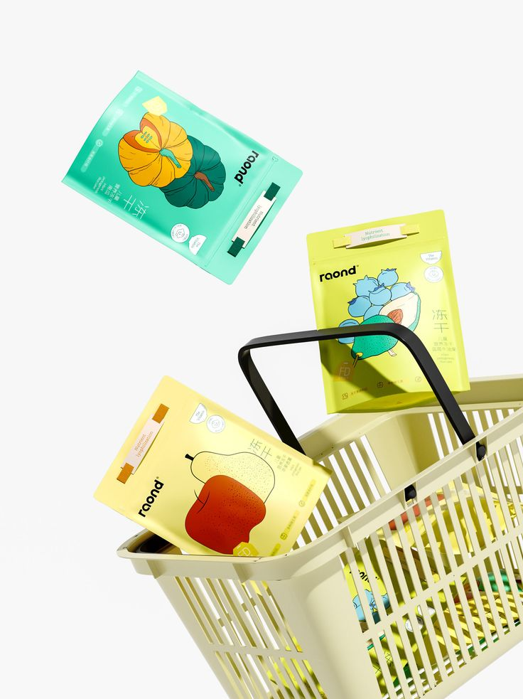

¡Te damos la bienvenida a Doña Cora!
Doña Cora es una de las cadenas de supermercados más reconocidas en España. Fue fundada por una familia de inmigrantes italianos a principios del siglo XX. Desde ese entonces, ha estado presente durante generaciones en barrios de todas las comunidades autónomas del país. Su modelo siempre ha funcionado: tiendas físicas, clientes fieles y una marca asociada a la confianza, la cercanía y la comida casera tradicional. Además, sus marcas blancas y productos de elaboración propia se distinguen por la excelente relación entre el precio y la calidad.
Haz scroll para descubrir más el contexto actual y el desafío de Doña Cora.

Sin embargo, el contexto ha cambiado.
En los últimos quince años, la compra online ha crecido rápidamente y se ha vuelto una herramienta digital más que simplifica la planificación semanal de millones de personas con tiempo limitado para ir al supermercado y que necesitan una opción que les permita gestionar su carrito desde cualquier sitio, muchas veces cuando están en el transporte público o tienen diez minutos libres entre una actividad y otra o reciben un mensaje de alguien que vive con ellos para avisar que se ha acabado el café o el líquido de lavar los platos.


Pero Doña Cora no ha logrado seguir el ritmo de otras cadenas y ahora necesitan tu ayuda.
La app y la web funcionan, pero la experiencia de usuario no es fluida. Es por eso que los directivos de la empresa te han propuesto que te sumes al equipo como UX manager. La misión que te han asignado es muy clara: debes mejorar la experiencia de usuario para hacer compras desde la aplicación móvil y la página web lo más rápido posible.

